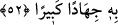
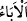

İNSANLARIN ÖĞÜT
ALMALARI İÇİN
50. Andolsun bunu, insanların öğüt almaları için, aralarında çeşitli şekillerde
anlatmışızdır; ama insanların çoğu ille nankörlük edip diretmiştir.
51. (Rasûlüm!) Şâyet dileseydik, elbet her ülkeye bir uyarıcı (peygamber)
gönderirdik.
52. O halde, kâfirlere boyun eğme ve bununla (Kur’an ile) onlara karşı büyük bir
cihâd et!
“Andolsun bunu,” Allah’a yemin olsun ki biz bu sözü, yâni bulutları oluşturma,
yağmurları indirme ve bunun faydaları yukarıda geçen yüce gâyeler sebebiyle
Kur’ân’da ve diğer semâvî kitaplarda “insanların öğüt almaları için,” düşünsünler ve
Allah’ın kudretinin kemâlini, bu büyük nimetin hakkını bilip tanısınlar ve hakkıyla onun
şükrünü yerine getirsinler diye “aralarında” önceki ve sonraki nesiller arasında
“çeşitli şekillerde anlatmışızdır;” tekrar etmişizdir.
“Ama” öncekilerden ve sonrakilerden “insanların çoğu ille nankörlük edip” küfrân-
ı nimette bulunarak ve onlara önem vermeyerek “diretmiştir.” “__WORD__ şiddetle
reddetmek, kabul etmemek demektir.
Nimetin hakkı nimeti düşünmek, onu yaratanın varlığına, kudretine ve ihsânına istidlâl
etmek, O’nun kudret ve ihsânını tefekkür etmektir. Küfrân-ı nîmet; yâni nimete
nankörlük, şükrünü edâ etmeyi terk ederek nîmeti örtmek/gizlemektir. En büyük k üfür,
Allah’ın vahdaniyyetini, nübüvveti veya şerîatı inkârdır. Nimeti inkâr/nankörlük
konusunda “__WORD__, dini inkârda ise “__WORD__ kelimesi daha çok kullanılır. “__WORD__ kelimesi
ise her ikisi için de kullanılır. Nitekim el-Müfredât’ta böyle geçmektedir.
Müfessirlerin çoğu “__WORD__daki zamiri, tertemiz suyun kendisine, yâni yağmura
gönderirler. Buna göre mânası şöyledir: ‘Biz yağmuru bazı beldelere ve yerlere
indirirken diğerlerine indirmeyerek, bazı vakitlerde indirirken bazısında indirmeyerek
veya bazen bol ve şiddetli bir yağmur, bazen hafif, bazen günlerce devam eden bir
çiseleme kılarak bazısını bir sıfatta diğerini başka bir sıfatta yaratarak insanlar arasında
dağıttık. “ama insanların çoğu ille” nimete “nankörlük edip” müneccimlerin dediği
gibi “Falan yıldız battığı için yağmura kavuştuk.” diyerek Allah Teâlâ’yı inkâr ederek